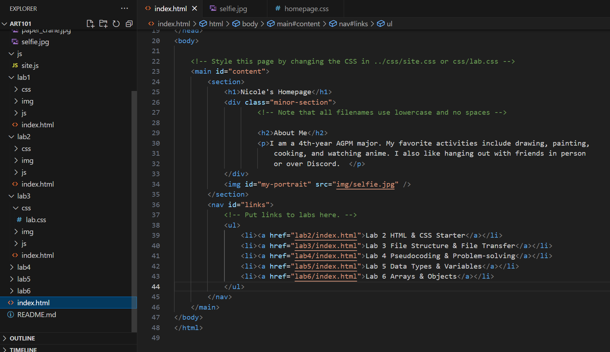

Lab 3 - File Structure & File Transfer
Challenge
The challenges of this lab were identifying the local file structure in our repository and making connections between our labs and homepage using links.
Problems
There weren't many problems with this lab since it felt fairly simple. The hardest part was trying to write out the responses to all these questions.
Reflection
While this lab wasn't very difficult, I still spent time making my pages look nice. If anything, how easy this lab was made me spend more time on aesthetics (both in this lab and on my homepage).
Results
